연삭기능사 (2010-07-11 기출문제)
1과목: 기계가공법 및 안전관리
1. 수평밀링머신의 니(knee) 위에 전후 방향으로 이동하는 안내면의 명칭은?
- 컬럼
- 아버
- 새들
- 커터
(정답률: 알수없음)

2. 일반적으로 밀링 머신의 크기를 표시하는 방법에 해당되지 않는 것은?
- 스핀들의 지름 또는 최대 이동거리
- 테이블의 최대 좌우 이동거리
- 테이블의 최대 전후 이동거리
- 테이블의 최대 상하 이동거리
(정답률: 알수없음)
3. 숫돌바퀴를 표시하는 방법으로 WA 60 K m V에서 60이 나타내는 것은?
- 입도
- 조직
- 결합도
- 숫돌 입자
(정답률: 알수없음)
4. 일감을 바이스에 고정하고 줄(file)작업할 때의 안전수칙으로 틀린 것은?
- 금이 간 줄은 땜질하여 사용한다.
- 줄은 두들기지 않는다.
- 줄질에서 생긴 가루는 입으로 불지 않는다.
- 줄은 손잡이가 확실한 것만을 사용한다.
(정답률: 알수없음)
5. 측정점 검출기가 좌표를 검출하고 그 데이터를 컴퓨터가 처리하여 위치, 크기, 방향, 윤곽, 형상 등을 측정하는데 사용하는 측정기는?
- 오토콜리메이터
- 3차원 측정기
- 광학식 각도기
- 광학식 클리노미터
(정답률: 알수없음)
6. 선반에서 절삭저항의 분력 중 탄소강을 가공할 때 가장 큰 절삭저항은?
- 배분력
- 이송분력
- 횡분력
- 주분력
(정답률: 알수없음)
7. 척에 고정할 수 없는 불규칙하거나 대형의 가공물 또는 복잡한 가공물을 고정할 때 사용하는 선반 부속품은?
- 센터
- 돌리개
- 맨드릴
- 면판
(정답률: 알수없음)
8. 연마제(SiC, Al232)을 가공액과 혼합한 다음 압축공기와 함께 노즐로 고속 분사시켜 다듬질하는 가공 방법은?
- 버니싱
- 액체 호닝
- 슈퍼피니싱
- 래핑
(정답률: 알수없음)
9. 호빙머신의 절삭조건에 대한 설명으로 틀린 것은?
- 호브의 절삭속도는 기어소재의 재질, 호브의 재질 등에 따라서 결정한다.
- 이송이 너무 느리면 날 끝에서 슬립이 생기는 경우가 있다.
- 이송을 너무 세분하여 느리게 하면 치형의 정밀도가 저하되는 경우가 있다.
- 절삭면을 좋게 하려면 호브는 저속으로 회전시키고 이송은 비교적 빠르게 한다.
(정답률: 알수없음)
10. 일반적으로 사용하는 랩제(lapping compound)가 아닌 것은?
- 탄화규소
- 산화 알루미나
- 산화크롬
- 흑연가루
(정답률: 알수없음)
11. 숫돌의 바깥지름이 350mm, 회전수가 1500rpm인 원통연삭기에서 연삭숫돌의 원주 속도는?
- 약 1623 m/min
- 약 1649 m/min
- 약 1673 m/min
- 약 1685 m/min
(정답률: 알수없음)
12. "표준자와 피측정물은 동일 축서상에 있어야 한다."는 측정 원리는?
- 오차의 원리
- 측정의 원리
- 모성의 원리
- 아베의 원리
(정답률: 알수없음)
13. 선반에서 축의 일부를 테이퍼 가공하려고 할 때 심압대를 편위시키는 계산식(x)은? (단, X는 심압대의 편위량, L은 가공물의 전체길이, D는 테이퍼의 큰 지름, d는 테이퍼의 작은 지름, l은 테이퍼의 길이를 나타낸다.)
- X= L(D-d) / 2l
- X= (D-d) / 2
- X= L(D+d) / 2l
- X= (D+d) / 2l
(정답률: 알수없음)
14. 선반에서 ø30mm의 SM20C 재료를 노즈 반지름 0.2mm인 초경 바이트로 절삭속도 180m/min으로 가공할 때 이론적 표면 거칠기(Hmax)를 구하면? (단, 이송은 0.1mm/rev이다.)
- 0.25㎛
- 2.35㎛
- 4.25㎛
- 6.25㎛
(정답률: 알수없음)
15. 소성가공의 일종으로 원통의 내면을 안지름보다 다소 큰 강구(steel ball)로 압입 통과시켜 매끈한 면으로 다듬질하는 가공법은?
- 그릿 블라스팅
- 버니싱
- 버핑
- 숏 피닝
(정답률: 알수없음)
16. 창성법에 의한 치형 가공을 하는데 사용되지 않는 공구는?
- 래크 커터
- 호브
- 피니언 커터
- 브로치
(정답률: 알수없음)
17. 관측현미경과 테이블로 구성되어 있으며 길이, 각도, 윤곽, 나사 피치 등의 정밀측정에 이용되는 측정기는?
- 공구 현미경
- 피치 게이지
- 나사 게이지
- 나사 마이크로미터
(정답률: 알수없음)
18. 가늘고 긴 일정한 단면 모양을 가진 공구에 많은 날을 가지고 있는 절삭공구를 사용하여 키 홈, 스플라인 홈, 원형 및 다각형 구멍 등을 절삭하는 가공은?
- 브로칭(broaching)
- 호빙(hobbing)
- 밀링(milling)
- 드릴링(drilling)
(정답률: 알수없음)
19. 드릴가공의 불량원인이 아닌 것은?
- 절삭날의 양쪽 길이가 틀릴 때
- 가공물의 재질이 균일할 때
- 주축 베어링이 마모되어 있을 때
- 주축이 테이블과 경사져 있을 때
(정답률: 알수없음)
20. 일반적으로 탁상 드릴링 머신에서 사용할 수 있는 드릴자루의 최대 지름은?
- ø10
- ø13
- ø15
- ø16
(정답률: 알수없음)
2과목: 기계재료 및 요소
21. 브로치(broach)를 크게 구조, 작용 및 형상과 용도에 따라 분류할 때, 구조에 따른 분류에 속하는 것은?
- 일체형(solid type)
- 형판에 의한 법(templet system)
- 바이트형(combined type)
- 플레이너형(planer type)
(정답률: 알수없음)
22. 방전 가공 전극재료의 구비조건으로 적합하지 않은 것은?
- 전기 저항이 클 것
- 전극의 소모가 적을 것
- 기계 가공이 용이할 것
- 가격이 저렴할 것
(정답률: 알수없음)
23. 밀링 작업 시 하향절삭의 특징 설명으로 틀린 것은?
- 가공면이 깨끗하다.
- 백래시 제거장치가 필요 없다.
- 테이블의 이송방향과 커터의 회전방향이 같다.
- 가공물의 고정이 쉽다.
(정답률: 알수없음)
24. 기어의 이 모양과 같이 공작물의 형상과 동일한 윤곽을 가진 밀링커터는?
- 평면 밀링커터
- 측면 밀링커터
- 메탈 스리팅 소
- 총형 밀링커터
(정답률: 알수없음)
25. CNC 공작기계 특성에 대한 설명으로 틀린 것은?
- 파트 프로그램을 매크로 형태로 저장시켜 필요시 불러 사용할 수 있다.
- 인치단위를 미터단위로 자동변환을 할 수 있다.
- 고장 발생시 자기진단이 불가능하다.
- 품질이 균일한 생산품을 얻을 수 있다.
(정답률: 알수없음)
26. 복원중(문제 오류로 문제 내용이 없습니다. 정확한 내용을 아시는분 께서는 오류신고를 통하여 내용 작성 부탁드립니다.)
- 복원중
- 복원중
- 복원중
- 복원중
(정답률: 알수없음)
27. 선반에서 지름이 50 mm인 연강봉을 가공할 때 회전수는? (단, 절삭속도는 157 m/min, π=3.14로 한다.)
- 800 rpm
- 1000 rpm
- 1200 rpm
- 1300 rpm
(정답률: 알수없음)
28. 전해 연마의 특징에 대한 설명으로 틀린 것은?
- 가공 변질층이 없고 평활한 가공면을 얻을 수 있다.
- 가공면이 방향성이 없다.
- 복잡한 형상의 제품은 가공할 수 없다.
- 연질의 알루미늄, 구리 등도 쉽게 광택면을 가공할 수 있다.
(정답률: 알수없음)
29. 일반적으로 리머의 가공여유는 얼마를 주는 것이 맞는가?
- 0.2~0.3mm
- 0.5~0.6mm
- 0.7~0.8mm
- 1.0~1.2mm
(정답률: 알수없음)
30. 절삭유제의 사용에 대한 설명으로 가장 적합한 것은?
- 절삭 속도를 아주 빨리하기 위한 것이 주목적이다.
- 바이트와 일감을 냉각시키기 위해 사용한다.
- 공구의 경도를 증가시키기 위해 사용한다.
- 한번 사용한 절삭제는 두 번 다시 사용하면 안 된다.
(정답률: 알수없음)
31. 드릴가공, 단조가공, 주조가공 등에 의하여 이미 뚫어져 있는 구멍을 넓히는 가공 방법은?
- 보링
- 버핑
- 스폿 페이싱
- 태핑
(정답률: 알수없음)
32. 보링 머신의 크기 표시 중 올바르지 않은 것은?
- 테이블의 회전수
- 주축의 이송거리
- 테이블의 크기
- 주축의 지름
(정답률: 알수없음)
33. 연삭숫돌의 3요소에 해당하지 않는 것은?
- 안지름
- 숫돌입자
- 결합제
- 기공
(정답률: 알수없음)
34. 선반의 구조에서 왕복대에 포함되지 않는 것은?
- 복식공구대
- 새들
- 돌리개
- 에이프런
(정답률: 알수없음)
35. 나사 바이트를 연삭할 때 사용되는 측정기는?
- 마이크로미터
- 다이얼 게이지
- 센터 게이지
- 플러그 게이지
(정답률: 알수없음)
36. 황동의 내식성을 개량하기 위하여 7:3 황동에 1% 정도의 주석을 넣는 것은?
- 톰백
- 네이벌 황동
- 애드머럴티 황동
- 델타메탈
(정답률: 알수없음)
37. 회전수가 250 rpm인 원동축에 모듈이 4, 잇수가 30인 기어가 있다. 속도비가 1/3인 경우 중심거리는?
- 80mm
- 240mm
- 480mm
- 600mm
(정답률: 알수없음)
38. 탄소강이 200~300℃의 온도에서 취성이 발생되는 현상을 무엇이라 하는가?
- 청열 취성
- 적열 취성
- 고온 취성
- 상온 취성
(정답률: 알수없음)
39. 미하나이트 주철에 대한 설명 중 틀린 것은?
- 담금질이 가능하다.
- 흑연의 형상을 미세화한다.
- 연성과 인성이 아주 크다.
- 두께의 차에 의한 감수성이 아주 크다.
(정답률: 알수없음)
40. 비금속 스프링에 속하지 않는 것은?
- 고무 스프링
- 공기 스프링
- 액체 스프링
- 동합금 스프링
(정답률: 알수없음)
3과목: 기계제도(절삭부분)
41. 캠을 입체캠과 평면캠으로 분류했을 때 입체캠에 속하는 것은?
- 판 캠
- 정면 캠
- 직선 운동 캠
- 구면 캠
(정답률: 알수없음)
42. 역지밸브라고도 하며 유체를 한 방향으로만 흘러가게 하고 역류하지 않도록 하게 하는 밸브는?
- 스톱 밸브
- 슬루스 밸브
- 첵 밸브
- 안전 밸브
(정답률: 알수없음)
43. 너트(Nut)의 풀림을 방지하기 위하여 주로 사용되는 핀은?
- 평행 핀
- 분할 핀
- 테이퍼 핀
- 스프링 핀
(정답률: 알수없음)
44. 알루미늄 합금을 주조용과 가공용으로 분류했을 때 가공용 알루미늄 합금에 속하는 것은?
- 실루민
- 라우탈
- 하이드로 날륨
- 두랄루민
(정답률: 알수없음)
45. 합금강의 재질과 KS규격기호의 명칭이 알맞게 짝지어진 것은?
- SNC - 니켈 코발트강
- STS - 고속도강
- SKH - 쾌삭강
- SPS - 스프링강
(정답률: 알수없음)
46. 구름베어링의 구성요소로서 회전체 사이의 일정한 간격을 유지해 주는 것은?
- 스러스트
- 리테이너
- 내륜
- 외륜
(정답률: 알수없음)
47. 브레이크 블록의 길이와 나비가 60 mm x 20 mm이고 브레이크 블록을 미는 힘이 900 N일 때 제동압력은?
- 0.75 N/mm2
- 7.5 N/mm2
- 75 N/mm2
- 750 N/mm2
(정답률: 알수없음)
48. 풀림의 목적이 아닌 것은?
- 잔류응력 제거
- 경도의 저하
- 절삭성 저하
- 냉간 가공성의 개선
(정답률: 알수없음)
49. 백래시(back lash)가 적어 정밀 이송 장치에 많이 쓰이는 나사는?
- 너클 나사
- 볼 나사
- 톱니 나사
- 미터 나사
(정답률: 알수없음)
50. 초경 절삭공구용 코팅 인서트의 특징이 아닌 것은?
- 내마모성이 우수하다.
- 내크레이터성이 우수하다.
- 내산화성이 우수하다.
- 비철금속은 절삭이 불가능하다.
(정답률: 알수없음)
51. 베어링 번호표시가 6815 일때 안지름 치수는 몇 mm인가?
- 15mm
- 65mm
- 75mm
- 315mm
(정답률: 알수없음)
52. 표면거칠기의 표시 중 그림과 같은 면의 지시기호가 나타내는 의미는?
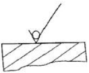
- 제거가공을 허락하지 않는 것을 지시
- 제거가공을 필요하다는 것을 지시
- 절삭 등 제거가공의 필요여부를 문제 삼지 않는 지시
- 가공면을 정밀 연삭해야하는 지시
(정답률: 알수없음)
53. 치수에 사용되는 치수보조 기호 설명으로 틀린 것은?
- Sø : 원의 지름
- R : 반지름
- □ : 정사각형의 변
- C : 45° 모떼기
(정답률: 알수없음)
54. 다음 보기의 설명을 만족하기 위하여 그림의 빈칸에 들어갈 것으로 옳은 것은?
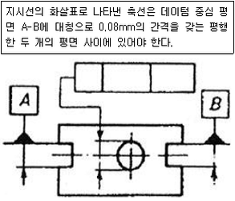
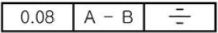
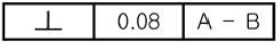
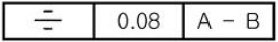
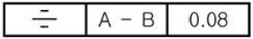
(정답률: 알수없음)
55. 제3각법으로 정투상도를 작도할 때 보기와 같은 정면도와 평면도를 보고 누락된 우측면도로 가장 적합한 것은?
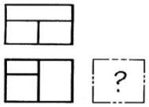
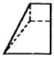
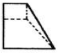
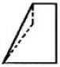
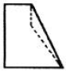
(정답률: 알수없음)
56. 그림과 같은 도면의 단면도 명칭으로 가장 적합한 것은?
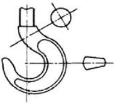
- 한쪽 단면도
- 회전 도시 단면도
- 부분 단면도
- 조합에 의한 단면도
(정답률: 알수없음)
57. 대상물의 보이지 않는 부분의 모양을 표시하는 용도로 사용하는 선의 종류는?
- 가는 파선 또는 굵은 파선
- 굵은 실선
- 가는 실선
- 굵은 2점 쇄선
(정답률: 알수없음)
58. 용접 기호 중 현장 용접의 의미를 나타내는 것은?
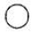
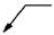
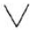
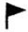
(정답률: 알수없음)
59. 감속기 하우징의 기름 주입구 나사가 PF 1/2 - A로 표시되어 있었다. 올바르게 설명한 것은?
- 관용 평행나사 A 급
- 관용 평행나사 호칭경 1"
- 관용 테이퍼나사 A 급
- 관용 가는 나사 호칭경 1"
(정답률: 알수없음)
60. 끼워 맞춤 기호의 치수 기입에 관한 것이다. 바르게 기입된 것은?
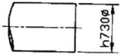
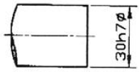
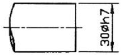
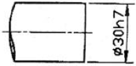
(정답률: 알수없음)